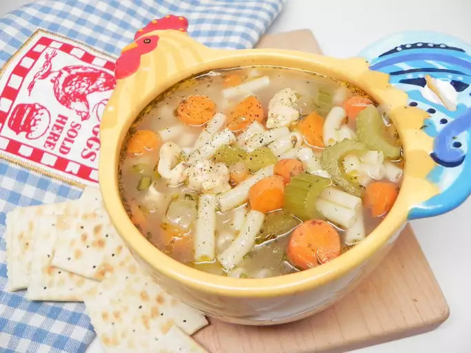

Split Pea Soup

Description
This split pea soup recipe makes a nourishing, hearty meal on a blustery fall or winter day.
There's nothing like classic split pea soup to satisfy your comfort food craving. This split pea soup recipe is complete with ham, hearty veggies, and simple seasonings.
Ingredients
- Dried Split Peas
- Cold Water
- Ham Bone
- Vegetables
- Spices and Seasonings
Steps
- Soak, drain, and rinse the split peas. Place them in a pot.
- Add the water, ham bone, onions, and seasonings to the pot.
- Bring to a boil, then simmer for about 90 minutes.
- Remove the meat from the ham bone and return the meat to the pot.
- Add the vegetables and cook until the vegetables are tender.